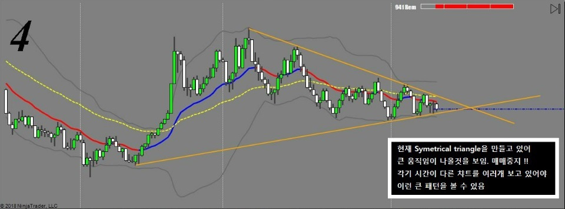
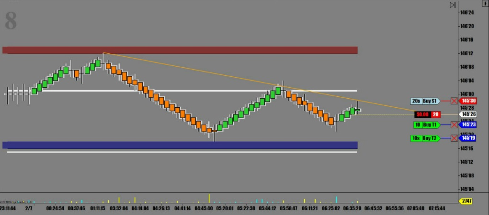
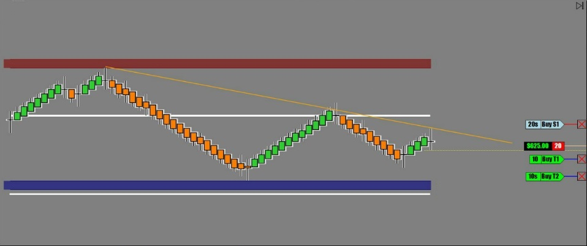
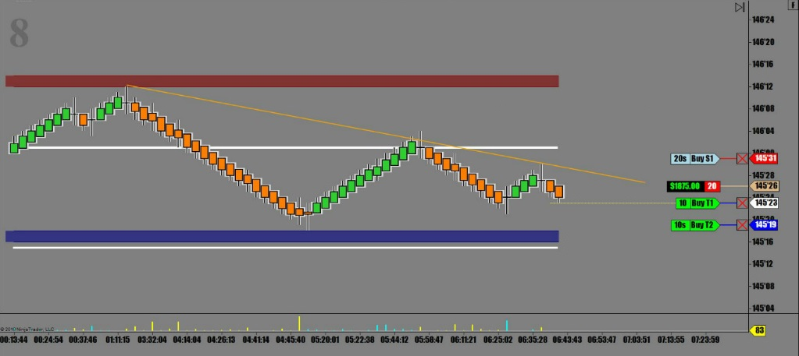
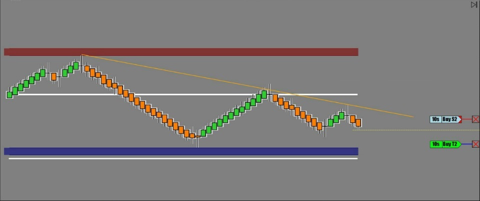
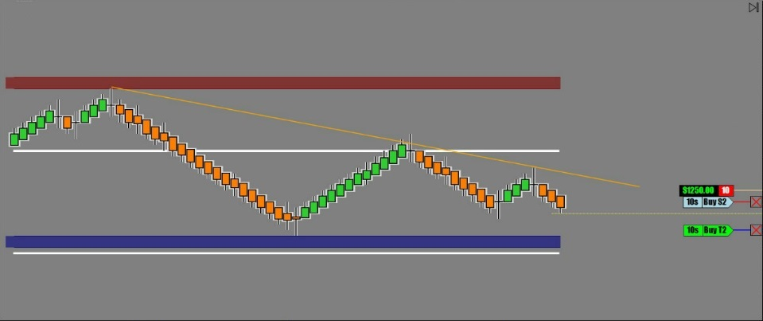
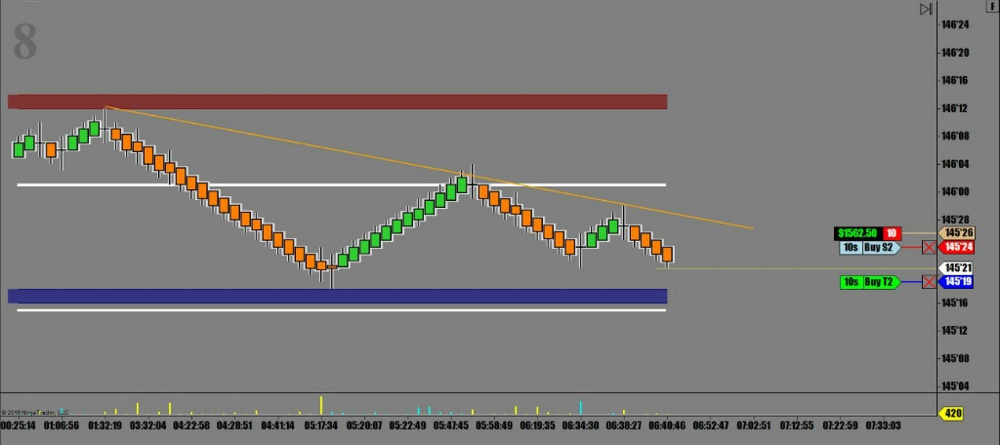
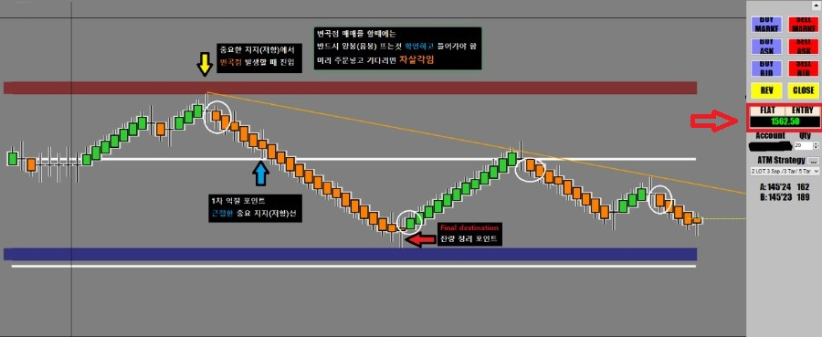

해외선물 - 단기추세선 저항받고 음봉 출현
큰폭으로 스윙을 이어가던 장세는 오늘도 역시 남은 여진이 계속 되는중.
국채선물은 일단 진정국면이고 가장 큰 재료인 증시의 움직임에 따라
약하게 반응하며 진행중
현재상황은 symmetrical triangle을 만들고 있는 중
조만간 어디론가 튈 준비를 하고 있기에 매우 조심하며 매매해야 하는 상황

오늘 증시가 상승중인지라 채권은 하락 압력이 거세고
고점하락 단기추세선에서 음봉 뜰 때 받음
근접한 오늘의 지지선까지가 목표


* 순항중

* 1차 익절 후 곧바로 손절주문 앞으로 전진배치



매매완료
아래 차트에 설명해 놓은것 처럼
중요한 그날의 지지/저항에서 믿을 만한 변곡이 발생할 경우 진입
일차 익절은 근접한 지지/저항선이 되겠고
목표가는 다음번 중요 지지/저항선으로 잡으면 무난함
손절은 당연히 오늘 진입한 지지/저항선 한 틱 위.

오늘 매매수익 $1,562.50
오늘매매 세줄요약
* Symmetrical Triangle formation 발생, 주의하며 관망
* 단기추세선에서 저항받고 음봉출현에 진입
* 짧게먹고 치고 빠지기 전법 성공
매매기법 - 중요 지지/저항에서 발생한 변곡점 매매